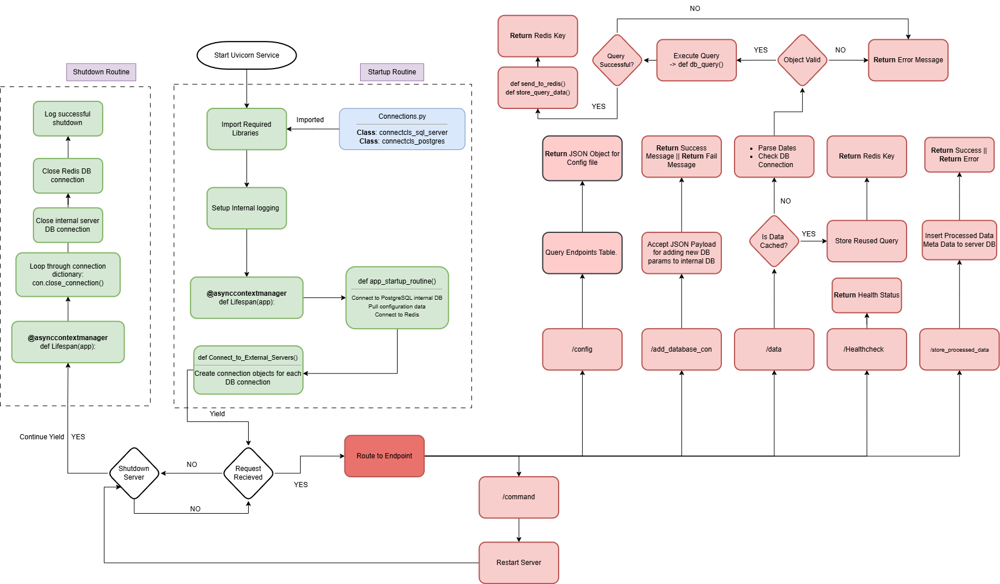
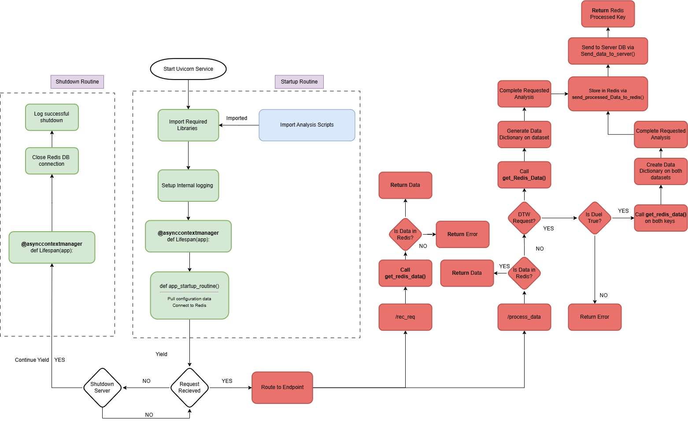
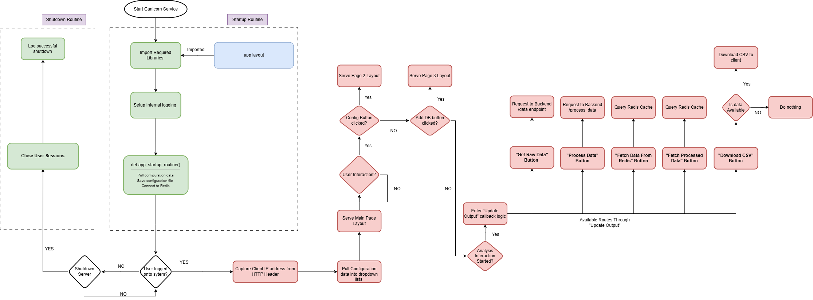
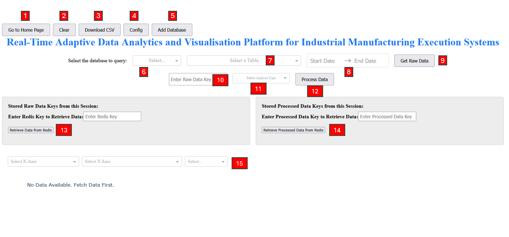
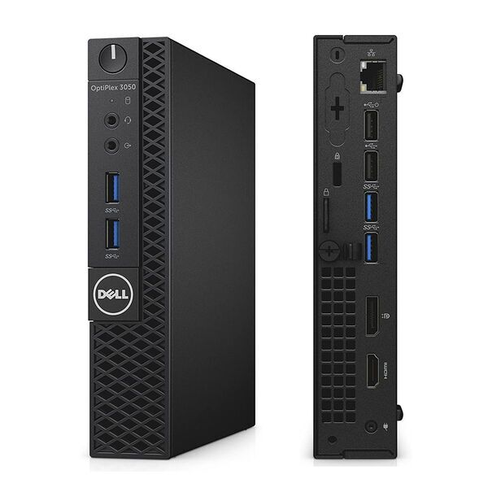

<!DOCTYPE html>
<html lang="en">
<head>
  <meta charset="UTF-8" />
  <meta name="viewport" content="width=device-width, initial-scale=1.0"/>
  <title>Screenshots – PRISM</title>
  <link rel="stylesheet" href="assets/css/style.css"/>
</head>
<script src="assets/js/main.js"></script>
</body>
</html>

<body>

<header>
  <nav>
    <ul class="nav-links">
      <li><a href="index.html">Home</a></li>
      <li><a href="about.html">About</a></li>
      <li><a href="system.html">Architecture</a></li>
      <li><a href="analysis.html">Analysis</a></li>
      <li><a href="technical.html">Extracts</a></li>
      <li><a href="screenshots.html">Screenshots</a></li>
    </ul>
  </nav>
</header>


  <main class="container">
    <h1>Visual Overview</h1>

    <section class="features">
      <h2>Abstraction and Backend Logic</h2>
      <p>These flowcharts outline how the platform handles startup, connection management, routing, caching, and analysis endpoints.</p>
      
      
    </section>

    <section class="features">
      <h2>Frontend Interaction Flow</h2>
      <p>This diagram shows how users interact with the platform Dash interface, from loading dropdowns to exporting processed results.</p>
      
    </section>


<section class="features">
  <h2>Front-End Interaction Overview</h2>
  <p>
    This annotated screenshot highlights key interactive elements of the Dash interface. Users can select databases, define query ranges, 
    retrieve cached Redis data, and trigger both raw and processed analysis pipelines. The design supports rapid switching 
    between live queries and historical lookups.
  </p>
  <div style="text-align: center; margin-top: 1.5rem;">
    
    <p style="font-size: 0.9rem; color: #555; margin-top: 0.5rem;">
      Numbered elements correspond to input components, dropdowns, and controls used throughout the analysis workflow
    </p>
  </div>
    <div style="font-size: 0.95rem; margin-top: 1rem;">
    <ol>
      <li><strong>Go to Home Page</strong> – Navigate back to NGINX landing page</li>
      <li><strong>Clear</strong> – Reset frontend interface and clear inputs</li>
      <li><strong>Download CSV</strong> – Export current analysis output</li>
      <li><strong>Config</strong> – Open configuration options</li>
      <li><strong>Add Database</strong> – Add new endpoint credentials to internal system</li>
      <li><strong>Database Selector</strong> – Select database to query</li>
      <li><strong>Table Selector</strong> – Choose specific table, view or other from selected DB</li>
      <li><strong>Start / End Date</strong> – Select time range for raw data query</li>
      <li><strong>Get Raw Data</strong> – Send query request to backend</li>
      <li><strong>Raw Redis Key Input</strong> – Manually enter Redis key for past query</li>
      <li><strong>Analysis Type Selector</strong> – Choose method available from the analysis engine</li>
      <li><strong>Process Data</strong> – Trigger backend analysis pipeline</li>
      <li><strong>Retrieve from Redis</strong> – Load previous raw query from cache, container populates session keys here</li>
      <li><strong>Retrieve Processed from Redis</strong> – Load past analysis result from cache, container populates session keys here</li>
      <li><strong>Graph Axis Selectors</strong> – System configures variables for X, Y, and plot type</li>
    </ol>
  </div>
</section>


    <section class="features">
      <h2>Local Server Deployment</h2>
      <p>
        The platform is hosted on a <strong>Dell OptiPlex 3050 Micro</strong> running <strong>Proxmox VE</strong>. 
        This setup provides isolated containers for each service and allows full control over system resources, startup routines, and local testing. 
        It also reflects real-world industrial constraints where edge-hosted services are needed.
      </p>
      
    </section>
  </main>

  <footer>
    <p>© 2025 Peter Walsh | <a href="https://github.com/PetWalsh007/FYP-2025" target="_blank">View on GitHub</a></p>
  </footer>

</body>
</html>
